Designing a mobile healthcare experience for clinical teams to manage appointments, access patient information, and navigate transcription workflows across roles.
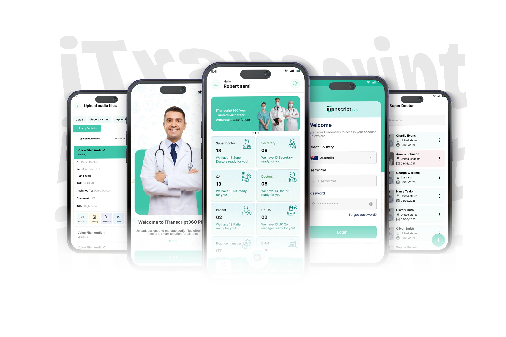
In outpatient clinics and hospital wards, clinicians spend hours walking between examination bays, triage rooms, and private consulting suites. Heavy computer trollies and fixed desktop stations tether staff to desks, causing documentation bottlenecks and delayed patient notes.
Desktop EHR screens rely on wide, multi-column tables with dense demographic rows. Squeezing this data directly onto a 390px smartphone screen causes illegible text and horizontal scrolling.
I transformed wide tables into compact, scannable appointment cards prioritizing essential clinical data: patient name, slot time, status pill, and attending doctor.
Clinic receptionists and nurses often manage bookings on the move while coordinating waiting rooms. Multi-page forms with tiny dropdowns lead to slow intake.
I created a streamlined 3-step modal flow: horizontal date selector strip, visual doctor selection card with specialties, and clean slot confirmation.
Physicians often postpone dictations until the end of shifts because recording on desktop setups requires returning to dedicated workstations between rounds.
I designed a prominent, thumb-reachable audio recording module on the dashboard, allowing clinicians to capture encounter audio immediately after visiting a patient.
Attending physicians, practice managers, secretaries, and patients require completely different tools. Cramming all features into a single menu confuses users.
I established tailored role-based user journeys sharing a single design system, ensuring users only see the actions and data relevant to their role.
As the UI/UX Designer for this mobile exploration, I focused on user experience architecture, component design, interaction flows, and responsive presentation.
Engineered the complete mobile screen library in Figma using Auto Layout, component variants, and interactive click-through prototyping.
Structured handheld layouts around the natural thumb zone, ensuring critical interactive controls (audio recorder, date picker, tabs) are easily accessible with one hand.
Handcrafted the portfolio presentation using semantic HTML5, modern CSS Grid/Flexbox, and vanilla JavaScript for recruiters to inspect on any device.
Healthcare organizations operate through tightly coordinated team handoffs. The mobile experience addresses these needs by supporting tailored views and actions for key stakeholder groups:
Focused on reviewing daily consultation queues, glancing at patient vitals, capturing bedside audio dictation, and inspecting SOAP notes.
Equipped with clinic group controls, provider roster oversight, and doctor allocation to ensure appointment capacity stays balanced across facilities.
Optimized for fast patient intake, selecting available doctors, booking appointment slots, and updating status (Upcoming, Completed, Cancelled).
A clean, accessible view for patients to review upcoming visits, check attending doctor credentials, and inspect verified encounter summaries.
Monitoring incoming voice consultation uploads and tracking transcription status between AI draft generation and final doctor sign-off.
Essential credential management allowing staff to update passwords, manage multi-factor access, and review session notifications securely.
A coherent six-stage flow guiding clinicians and staff seamlessly through mobile daily tasks:
Multi-step value primer introducing voice dictation, SOAP notes, and EHR sync.
Step 01Secure login routing the user directly into their tailored role view.
Step 02Home screen with daily appointment stats and primary audio action.
Step 03Calendar strip with Upcoming, Past, and Cancelled filter tabs.
Step 04Compact card layout presenting demographics, vitals, and visit log.
Step 05Notification center and password change with validation rules.
Step 06Every screen below is extracted from the actual project design files. Click any interface to open it in full resolution in the interactive lightbox.
Introducing clinicians to core mobile value: hands-free consultation dictation, structured clinical SOAP notes, and direct hospital EHR write-back without opening a laptop.
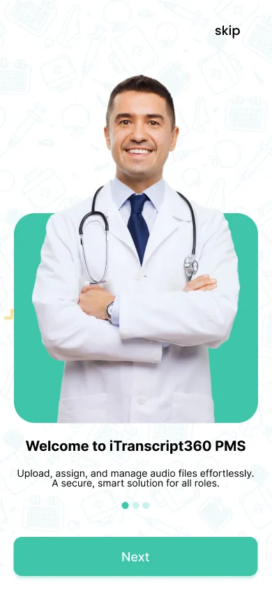
Explaining how doctors can record conversations directly at the bedside with ambient noise cancellation.
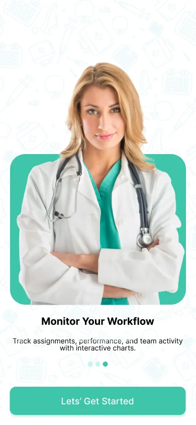
Showing how ambient audio is formatted into Subjective, Objective, Assessment, and Plan fields automatically.
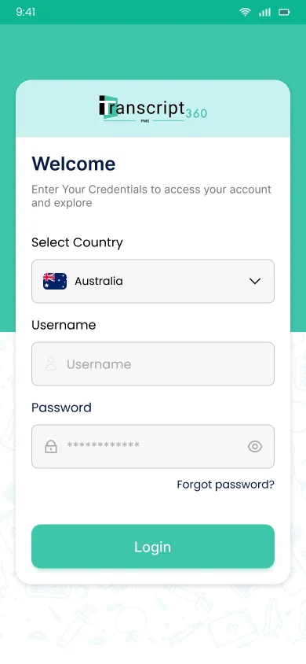
Highlighting seamless synchronization with primary hospital record systems (Epic, EMIS Web, SystmOne).
Designed for single-handed use during clinic rounds. The primary action card places audio dictation in the lower thumb zone, accompanied by daily appointment statistics and upcoming patient cards.
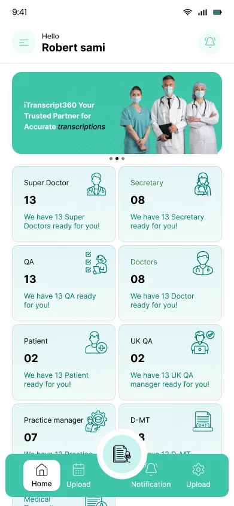
Shows daily appointment counts, audio upload status, quick action buttons, and upcoming patient triage queue cards.
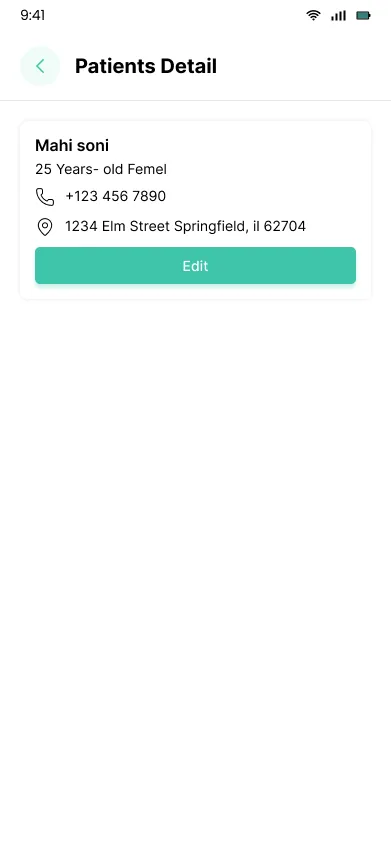
Patient header with MRN number, appointment slot details, contact links, and historical consultation logs.
Enabling secretaries, nurses, and patients to check doctor availability, review calendar dates, and confirm consultations in three fast steps.
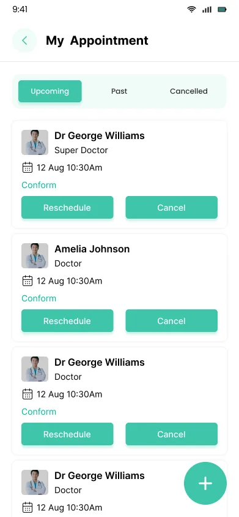
Horizontal date picker with filter tabs: Upcoming (02), Past, and Cancelled.
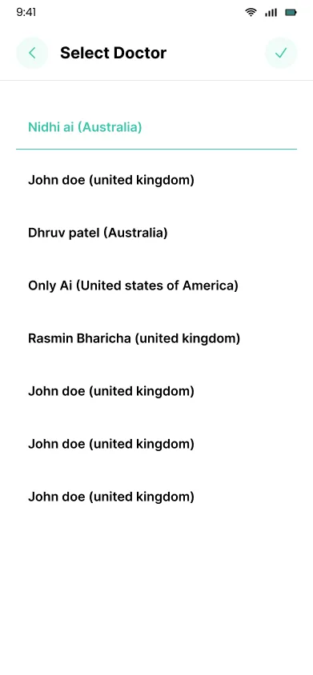
Provider cards with doctor avatars, clinical specialty tags, and direct availability selection.
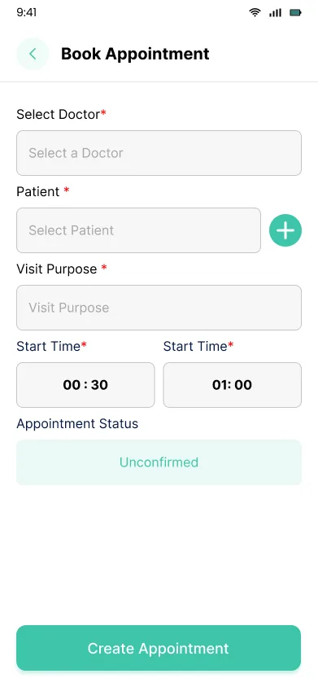
Clean modal inputs for patient details, contact numbers, symptoms, and slot confirmation.
Practice managers can organize providers across multiple clinic locations, register new attending doctors, and enforce healthcare governance from their phones.
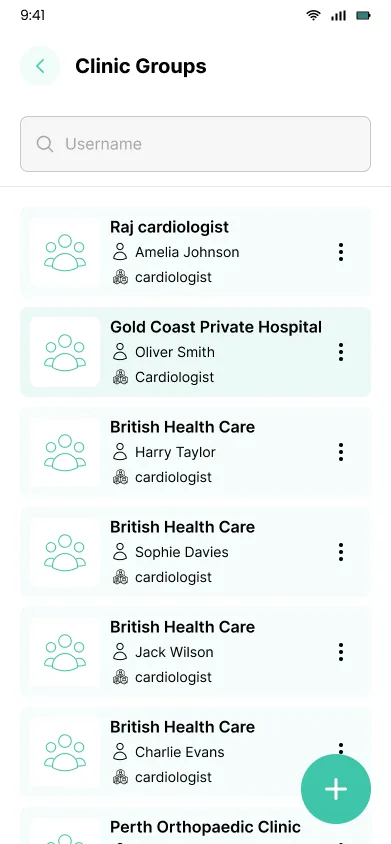
Managing affiliated hospital departments, satellite clinics, and staff allocations.
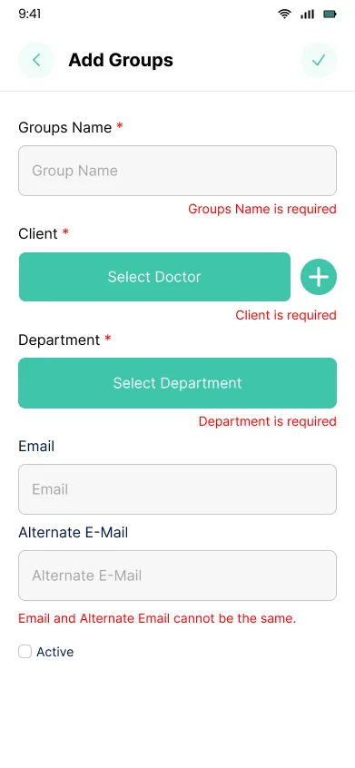
Bottom-sheet input form for creating new practice branches and setting group parameters.
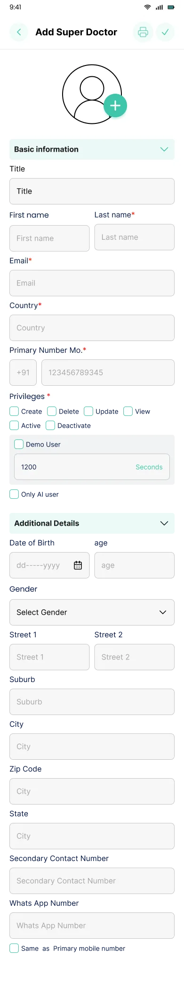
Registering attending doctors with specialty selection, medical license numbers, and clinic assignments.
Providing clinical staff with timestamped alert feeds for appointment changes, user profile controls, and secure password updates.
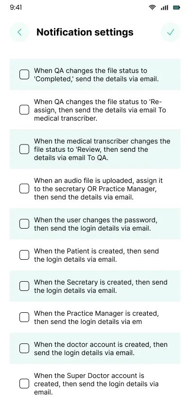
Timestamped alert cards notifying staff of appointment bookings, doctor reassignments, and transcription progress.
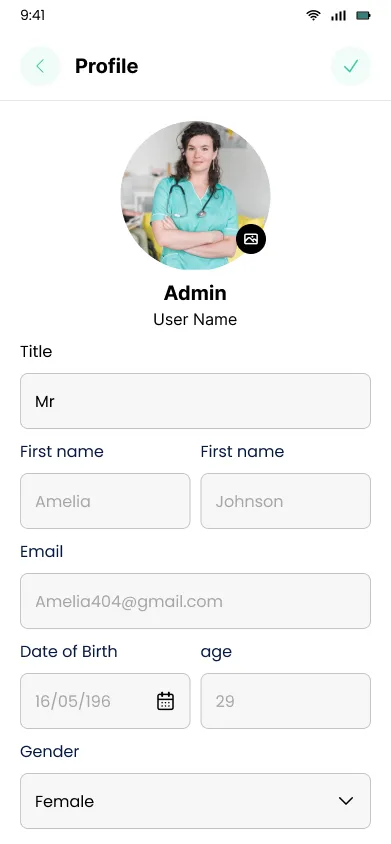
Doctor credentials, clinic association details, notification preferences, and logout trigger.
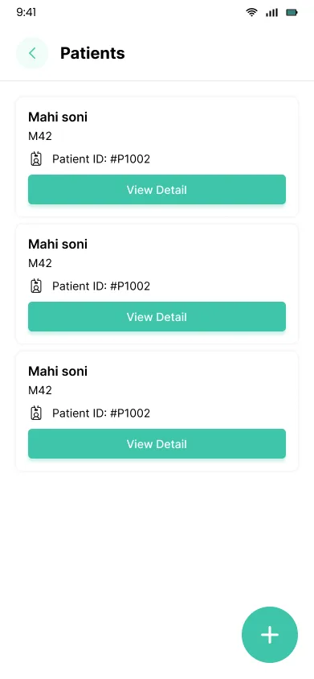
Protected credential update form with current password verification, new password field, and validation rules.
A disciplined, accessible mobile design system engineered for high-stress hospital lighting conditions and single-handed thumb navigation.
Distinctive, contemporary grotesque typeface used for presentation headings, high-impact titles, and section dividers.
Clean geometric sans-serif typefaces engineered for digital screens, offering tall x-heights, distinct numeric glyphs, and high legibility at 13–16px sizes.
The mobile application does not exist in isolation. It forms a unified healthcare ecosystem with the PMS iTranscript360 desktop command center.
While clinic administrators, billing clerks, and transcription QA editors work primarily on large multi-monitor workstations, physicians move fluidly between desk visits and hospital rounds. Encounters recorded on mobile sync directly into the web command center for formal SOAP finalization and hospital EHR export.
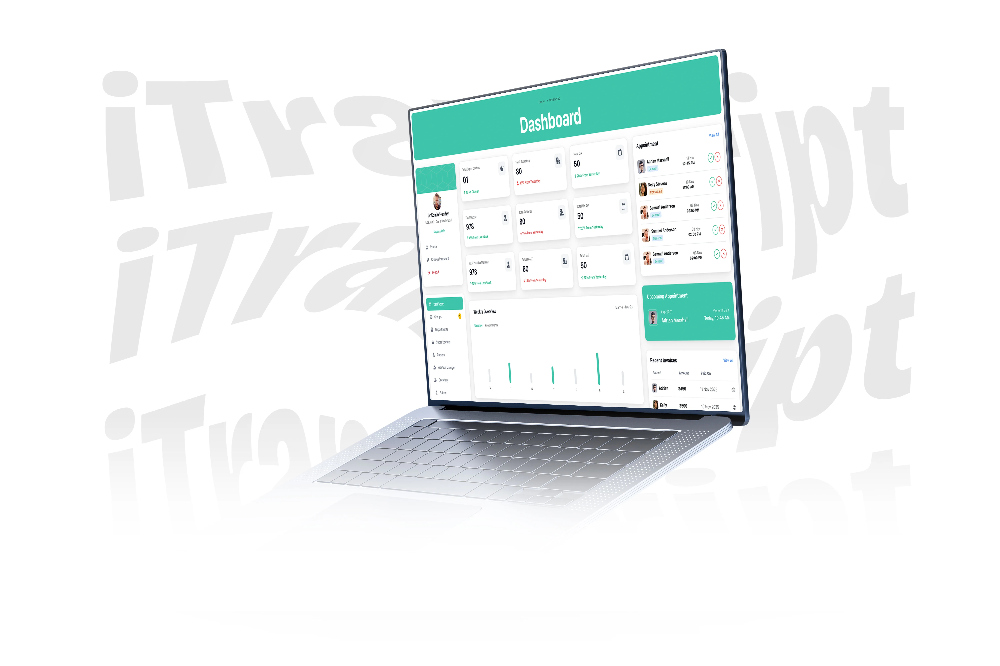
Prioritizing verified design outcomes and realistic product learnings over fabricated statistics.
Onboarding, Dashboard, Appointment Strip, Booking, Patient Detail, Groups, and Settings.
Structured Auto Layout components, tokens, inputs, and variants for iOS/Android canvases.
Tailored journeys for Doctors, Clinic Managers, Front Desk, Patients, and QA Editors.
Handcrafted HTML5/CSS presentation with interactive full-screen lightbox modal.
Designing PMS iTranscript360 Mobile App reinforced that handheld clinical software must eliminate friction at all costs. Physicians on ward rounds have zero tolerance for multi-nested menus or tiny tap targets.
A strong design case study transparently acknowledges project boundaries rather than manufacturing fictional results: